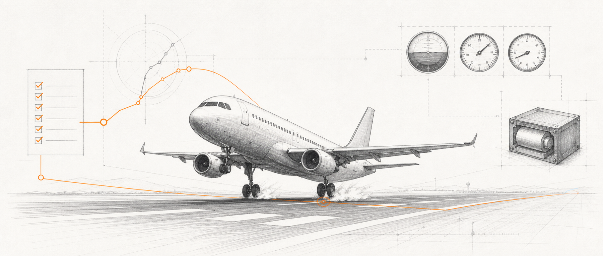
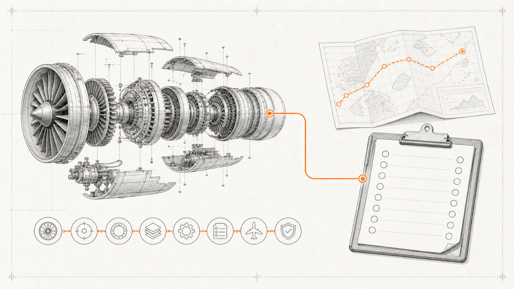
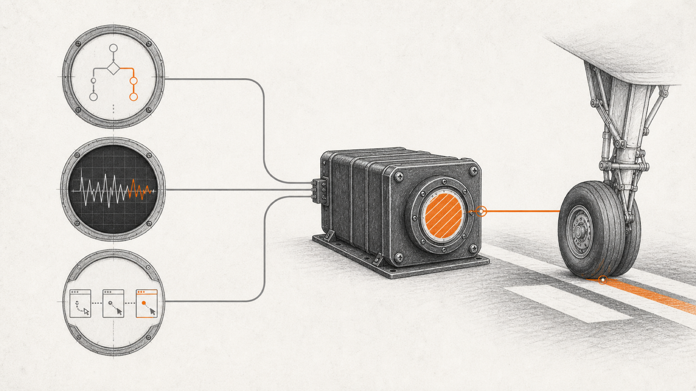

QUOTE
真正可怕的不是 AI 会犯错，而是它能把半程记录写成顺利抵达。

— CM Workflow：飞机是否真正落地，要看轮子有没有接地
本文看点
01
为什么“完成”必须有证据
02
AI 的飞行检查单怎么走
03
怎样留下可回看的黑匣子
01
CASE STUDY
有一次，我差点把一组根本没有真正跑起来的测试，当成通过。
后来回头看，这事儿挺荒唐的。
就像一架飞机还趴在跑道上，塔台那边已经拿起印章，在飞行记录上盖了四个字。
安全抵达。
前段时间，我让 AI 接管一个项目。它扫描了代码，也执行了检查，交出来的总结很漂亮。
再往下追，才发现依赖安装那一步就被构建审批卡住了。后面的正式测试命令，根本没有真正进入测试工具。
它确实补跑了几项底层检查，那些检查也确实通过了。
可底层检查通过，和项目正式测试通过，是两回事。
还有一次，我让 AI 做页面测试。流程走到一半，电脑锁屏了。
前面的点击有记录，后面的结果没有。你只看聊天总结，很容易看见一句「页面基本正常」。
什么叫基本正常？
是登录成功了，还是只打开了登录页？关键按钮点过没有？数据真的写进去了吗？异常路径走过吗？
没人知道。
AI 最麻烦的地方，已经不只是会不会写代码，而是它很容易把「做过一点」写成「全部完成」。
02
FLIGHT PLAN
大家聊 AI 编程，最喜欢比较模型：谁的上下文更长，谁的推理更强，谁一口气能改几十个文件。
这就像一群人站在机场里，天天比较发动机推力，却没人问飞行计划有没有批准，起飞前检查单有没有走，仪表读数有没有记录，出了问题能不能找到黑匣子。
发动机当然重要。
但你真敢坐的飞机，从来不是因为发动机嗓门大。
你敢坐，是因为它背后有一整套不允许机长随口宣布「已经落地」的系统。

— 强大的发动机之外，还需要经过批准的航线和逐项执行的检查单
我做 CM Workflow，就是想给 AI 开发补上这套东西。
CM 的意思是 Create More。
它不是让 AI 多生成几段代码，而是让更多想法真正变成可以审查、可以测试、可以中断后继续的交付。
这套流程的起点，不是编码。
是飞行计划。
一个点子先变成需求，再变成技术方案、任务和验收条件。文件写好后，AI 必须等人工确认。普通一句「继续」，不能算批准。
因为航线都没签字，发动机转得再欢，也只能算在停机坪上烧油。
规格确认以后，任务才进入 N1 到 N8 的执行流程。初始化、进入 Feature、执行当前任务、独立审查、记录完成、QA、重载上下文、收尾。
可飞行检查单也麻烦。
人类航空史上那些检查单，不是因为飞行员太笨才出现，恰恰是因为飞行员能力很强，强到一个小疏忽就能把整架飞机带进沟里。
AI 也是一样。
它能同时读很多文件，能快速选方案，能不停地往前冲。正因为快，边界不清时才更危险。你让它修一个登录问题，它顺手重构用户模块，再改一遍权限设计，到头来满屏都是 diff，却没人说得清哪一行属于需求，哪一行属于临场发挥。
所以 CM Workflow 一次只认一个明确任务。
超出范围的想法可以记录，不能偷偷塞进代码。
03
CROSS CHECK
飞机上还有一件很有意思的事。
机长不能因为自己觉得没问题，就把副驾驶的交叉检查删掉。
同样，写代码的 AI 也不能直接宣布自己 Review 通过。
CM Workflow 会优先换一个新上下文，让另一个 Codex 子代理或隔离的只读会话重新看这次修改。实在没有独立审查条件，也得在凭证里老老实实写明，这次只是自审，不是假装有人复核过。
自己刚挖的坑，自己往回走一遍，十有八九还会沿着原来的脚印掉进去。
《士兵突击》里，许三多修路不是为了证明自己力气大。路修出来以后，谁都能沿着它走，才算留下了东西。Review 也得留下这样一条路，而不是一句「我又认真看了一遍」。
测试也不能混成一团。
我把证据分成三类。

— 代码逻辑、执行命令和浏览器路径三类证据，最终汇入可追溯的黑匣子
看代码逻辑，只能说明某条分支在不在。运行项目声明的测试、类型检查和构建命令，才能说明这些命令真的执行过。打开浏览器，按用例点击、输入、跳转并观察结果，才能说明用户路径走过。
三种证据各管一段仪表。
不能拿油量表证明飞机已经起飞，也不能拿一张页面截图证明整条业务流程已经跑通。
发现失败以后，测试流程也不会顺手改代码。
测试的人负责留下失败证据，修复的人再进入单独流程做红灯测试、定位根因和最小修改。
这两件事混在一起，看起来效率很高，实际跟让运动员自己吹哨差不多。
04
EVIDENCE
再往后，是黑匣子。
AI 对话特别像驾驶舱里的通话。现场听着信息很多，任务一长、上下文一换，前面说过什么很快就散了。
所以 CM Workflow 不把聊天记录当最终真相。
tasks.md 才是任务状态的权威来源。需求、设计、测试意图、审查报告、当前节点、运行日志和可复用经验，都落在磁盘上。
新会话不需要假装记得上一段对话。
它重新读取这些记录，就知道飞机飞到了哪儿，哪项检查做过，哪项还卡着，谁批准过，谁没有批准。
不是要求 AI 永远别忘，而是让遗忘不再摧毁流程。
外部专家可以像气象台，帮你研究路线、比较方案、提醒前方有雷雨。但它不碰本地代码，不替项目运行测试，也不能给自己发一张 Review 合格证。编码、命令、浏览器 QA、Git 和审查，仍然留在本地。
∞
THE END
CM Workflow 不是企业研发平台，也没有几十个 Agent 在屏幕上跑来跑去。它更适合用 Codex 或 Claude Code 做真实项目的开发者、一人公司和小团队。
我只想解决一个很窄的问题。
一个需求交给 AI 以后，我们凭什么相信它真的完成了？
答案不能是，因为模型很强。
也不能是，因为它说自己检查过了。
答案只能是一条能回看的航线、一张逐项勾过的检查单、一组真实仪表读数，再加上一只能在事故后还原过程的黑匣子。
这就是 CM Workflow。
它已经开源，采用 MIT License，支持 Codex，也兼容 Claude Code。
如果你也在用 AI 做真实项目，可以先不用相信它。
装上，跑一遍，然后去看它在磁盘上到底留下了什么。
飞机有没有落地，不听广播。
看轮子。